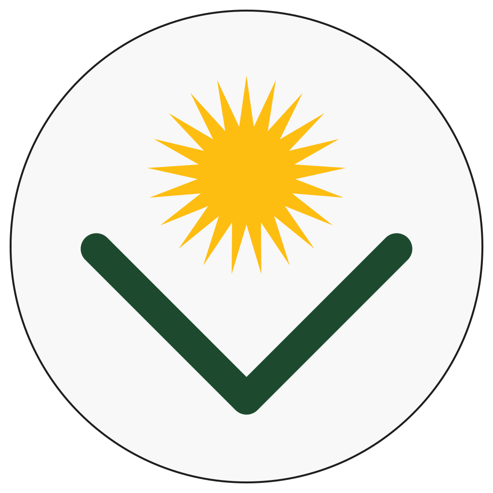
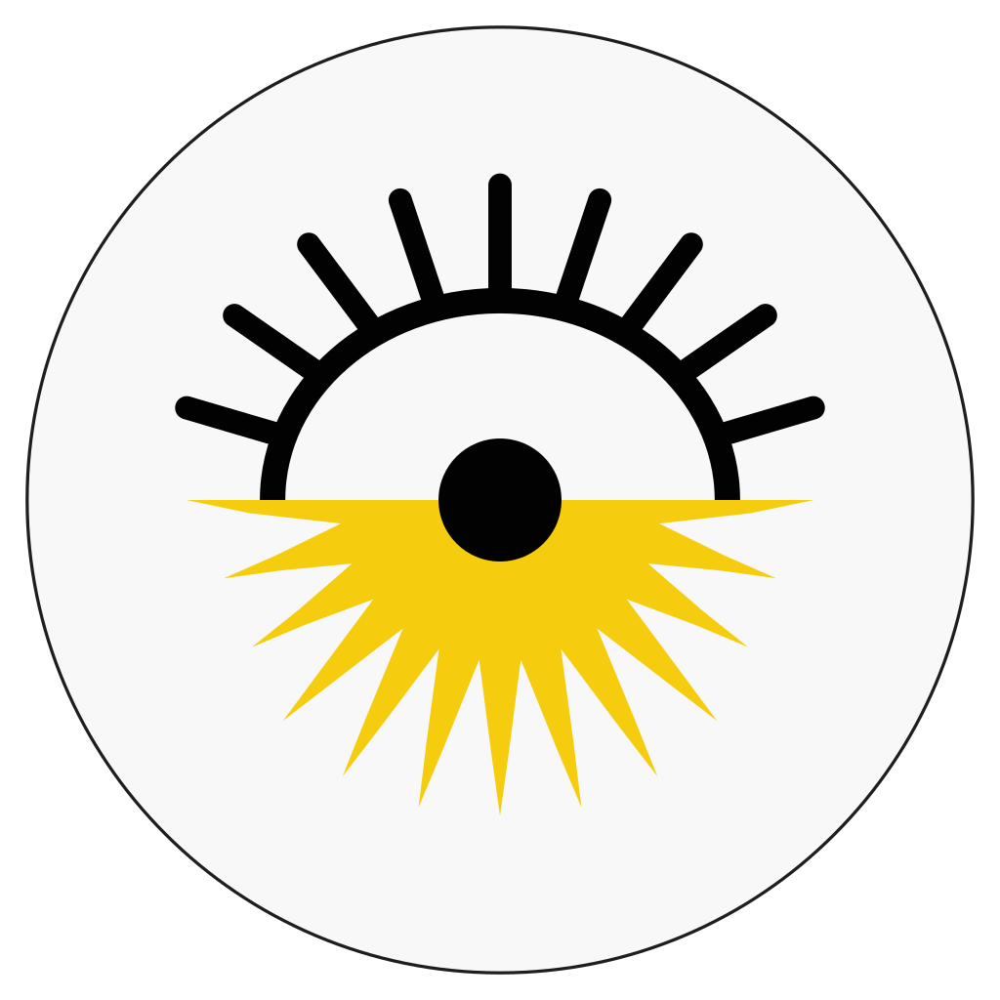
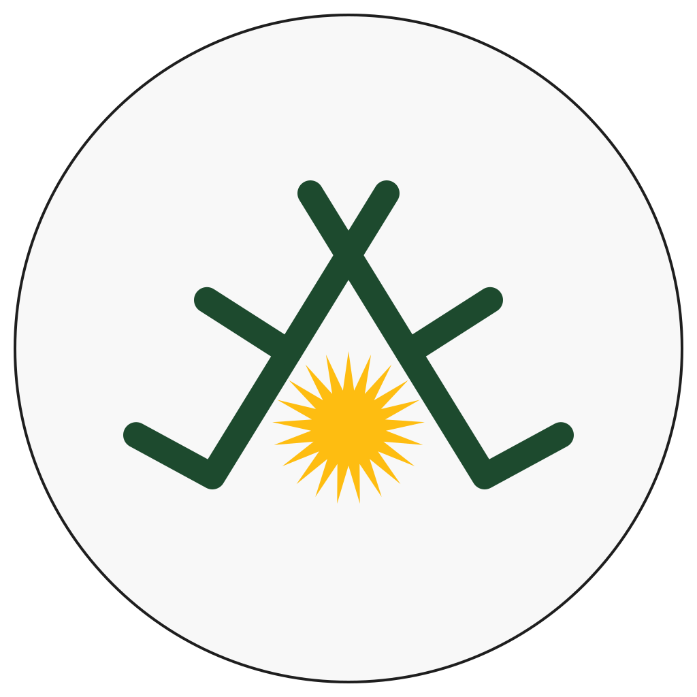
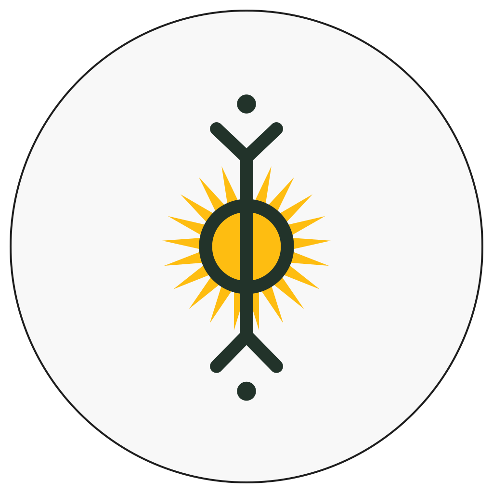
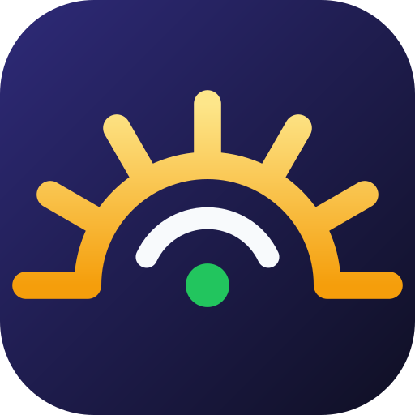
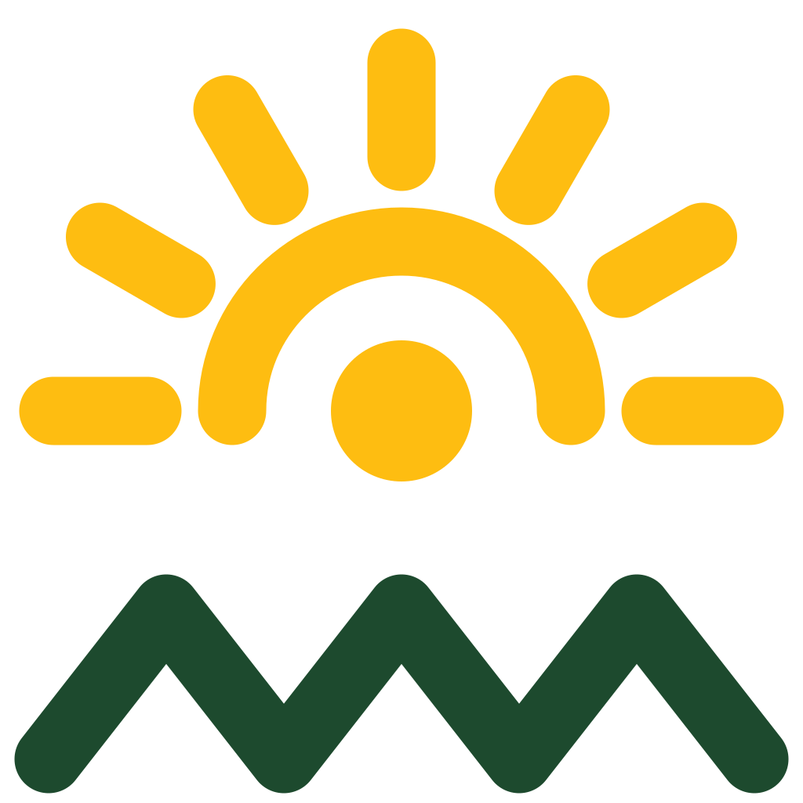

Kanî Labs
Open-source tools, from a Kurdish spring.
Kanî (کانی) is Kurdish for a spring, the place where water comes out of the ground: a source. We make open-source software for Kurdish language and culture, and private, offline-first tools for everyone.
Projects
Every project is free software and works offline wherever it can.
-

Open Vitae
A private resume builder that runs entirely in your browser. LTR and RTL, works offline, exports to PDF, Word and more.
- Web app
- Offline
- RTL
-

Rojڕۆژ
The Kurdish solar calendar for GNOME Shell, the web and the command line, with Kurdish days for Google Calendar and iPhone.
- GNOME Shell
- Web
- CLI
-

tsroj
The TypeScript library for the Kurdish solar calendar.
- TypeScript
- Library
-

pyroj
Kurdish solar calendar and conversions (Gregorian, Persian, tabular Islamic) in Python, standard library only.
- Python
- Library
-

Zimanyar
Offline grammar checker and teacher for Kurdish (Sorani and Kurmanji): browser extension, Linux app, CLI and web.
- Browser extension
- Linux
- CLI
- Web
-

Zimankit
Kurdish language toolkit: normalisation, IPA, transliteration, morphology, verb paradigms, language ID and wordlists.
- Toolkit
- Sorani
- Kurmanji
-

Tajdîn
Internet radio always by your side: Kurdish stations and 50,000 more, for Chrome, Firefox and the web.
- Chrome
- Firefox
- Web
-

Deqدەق
Traditional Kurdish tattoo shapes as an open, parametric design system: spec, TypeScript, Python and Rust libraries, icons, fonts and Studio.
- In development
- Design system
- TS · Python · Rust
The mark
The logo is made only of signs from deq, the traditional Kurdish tattoo, as catalogued in Deq. The half sun (an arc, seven rays and a dot) is recorded by wearers and writers as “the source of life”. Below it, the zigzag is water: the spring.
Principles
- Private by default. Tools work offline wherever they can.
- Kurdish first, never Kurdish only. Sorani and Kurmanji, right to left and left to right.
- Free software. Most projects are GPL-3.0-or-later.